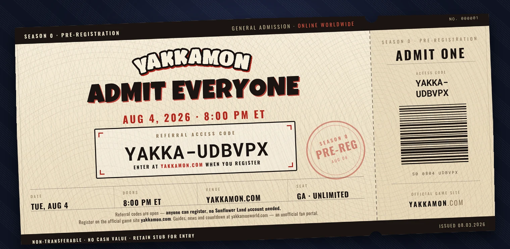

Need a code right now?
Use YAKKA-UDBVPX, or just follow this link and it’s applied for you. You get a Gold Box in game; we earn points.

ACCESS CODE: YAKKA-UDBVPX
Yakkamon pre-registration opens to everyone on Tuesday, August 4, 2026 at 8:00 PM ET. From that moment you no longer need a Sunflower Land account, a Bumpkin Level, or a wallet — a Yakkamon referral code from a trainer who has already signed up is enough to get you in.
Yakkamon access code vs referral code — what's the difference?
Both phrases point at the same box on the sign-up screen, but the codes come from different places.
An access code is what Sunflower Land players have been claiming from the Yakkamon sign next to Stella in the Plaza. Those unlocked in waves by Bumpkin Level, starting at Level 150+ and finishing with Level 20+ on Aug 2.
A referral code — sometimes called a trainer code — comes from a player who has already registered. That's the route that opens on Aug 4, and it has no requirements attached at all. So if you've been searching for a "Yakkamon code" and coming up short, this is the one you want.
How to get a Yakkamon referral code
There are three easy ways:
- Ask a friend who has already signed up. Every registered trainer has a code to share.
- Use this portal's code. It's YAKKA-UDBVPX — type it into the trainer code screen when you register at yakkamon.com.
- Ask in the community. Plenty of trainers drop codes in our Telegram chat.
How to register with a referral code, step by step
1. Wait for 8:00 PM ET on Aug 4. Referral codes don't work before that moment, no matter where you got yours.
2. Go to yakkamon.com. That's the official game site — this portal is a fan project and can't register you itself.
3. Enter your code on the "Enter Trainer Code" screen exactly as it was given to you, then press Confirm.

The same screen Sunflower Land players have been using — a referral code goes in the same place.
That's the whole process. There's no purchase, no wallet connection, and no gas fee at this stage.
What pre-registering actually gets you
Signing up locks in your Monster Egg tier, which is handed out purely in sign-up order: the first 10,000 trainers get Platinum, then Gold, Silver, Bronze and Basic as the numbers climb toward 500,000. Registering earlier gets you a better egg — that's the one thing the clock decides.
It also puts you in position for the two dates that follow: the free Genesis Monster mint in mid-September (open to pre-registered trainers only, you cover just the network fee) and Early Access in November or December 2026, when the game actually opens — staged by wave, with your rank deciding which one you're in.
Why the official docs say "August 5th"
Because they're quoting the UTC date. 8:00 PM ET on Tuesday Aug 4 is midnight UTC, which is already Wednesday Aug 5 in London and everywhere east of it. Same instant, two calendar dates — if you're in the Americas, the evening you want is Tuesday the 4th.
Yakkamon referral code FAQ
Do I need a Sunflower Land account?
No. That requirement disappears entirely on Aug 4. It's a big shift — the roughly 295,000 Sunflower Land players below Level 20 become eligible at the same moment as everyone who has never touched the game.
Do I need a crypto wallet to pre-register?
Not to pre-register. A Ronin wallet matters later for the free mint and the airdrop, but the sign-up itself just needs a code. The FAQ walks through wallets and gas when you're ready for them.
Where do I enter my Yakkamon code?
On yakkamon.com, on the "Enter Trainer Code" screen — the same field for access codes and referral codes alike.
Does a referral code cost anything, or expire?
They're free, and you use one only once, at sign-up. You don't need to collect several.
What does the person who referred me get?
75 points per verified referral. The first five are instant; from the sixth onward the friend must link a wallet and deposit 100 $FLOWER of their own — a sign-up alone no longer pays, and linking Discord and X no longer counts. Only genuine referrals count — removed ones are deducted, and abuse can disqualify an account outright. The referral rules spell this out.
Can I still register after Aug 4?
Yes — pre-registration doesn't close on Aug 4, it opens. But because eggs go out in sign-up order, the difference between registering on the 4th and registering in September is a real one.
The full tier breakdown lives on the Pre-registration page, common questions are answered in the FAQ, and if something still isn't clear, ask in the Telegram chat — someone will have hit the same thing.